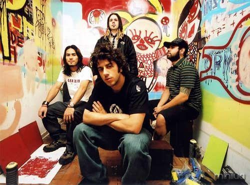
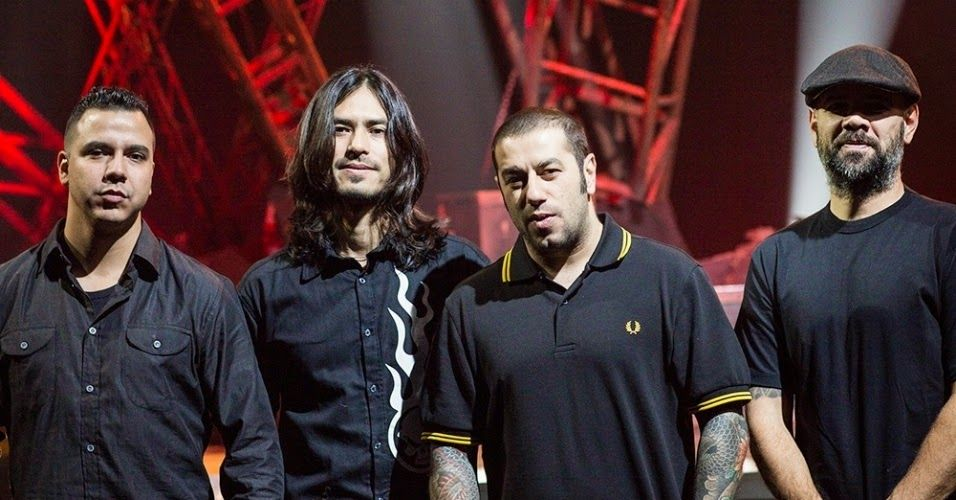

Formada em 1995, na cidade de Barueri, em São Paulo, a CPM 22 é uma das bandas mais conhecidas do rock brasileiro. Com influências do punk rock e do hardcore melódico, o grupo construiu uma identidade musical marcada por guitarras intensas, melodias envolventes e letras que abordam sentimentos, relacionamentos, experiências pessoais e situações do cotidiano.Ao longo de sua trajetória, a banda conquistou espaço tanto na cena independente quanto no cenário musical nacional, tornando-se referência para diferentes gerações de fãs do rock.

